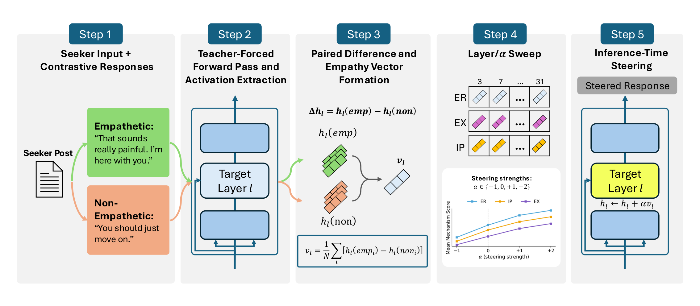
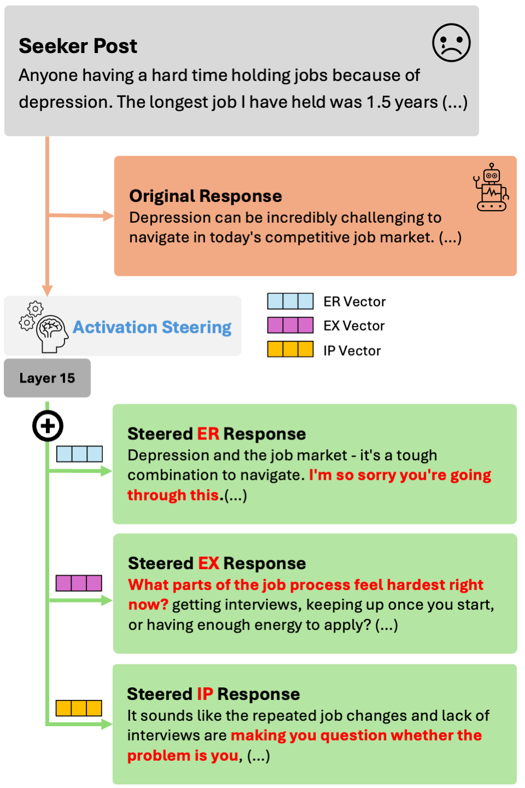
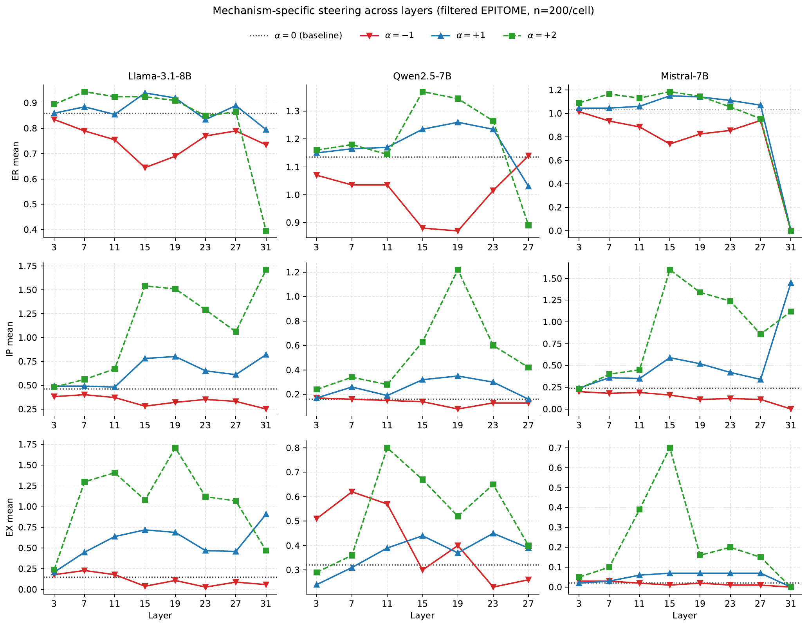
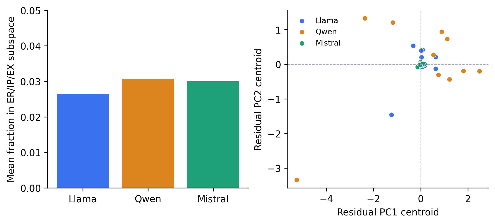

Interpretability · Activation Steering
Department of Artificial Intelligence, Ajou University
EMNLP 2026 · Main Conference Explore the Interactive PaperDiscover the method and findings through interactive visuals.Supportive empathy is evaluated along several dimensions at once. We asked whether those evaluation dimensions correspond to directions a model can actually be steered along — independently.
Activation steering can control traits like honesty, refusal, and sycophancy by adding a direction to a model's residual stream. Empathy is harder: a response can acknowledge feeling, interpret a situation, or invite elaboration, and a single aggregate score hides which of these actually moved.
Using the EPITOME framework, which scores peer-support replies on Emotional Reactions, Interpretations, and Explorations, we extracted one candidate direction per dimension in three instruction-tuned LLMs and intervened on each — measuring both its target effect and what it did to the other two.
What we found
At layer 15 and α = +1, every model–dimension pair moved its target score in the intended direction across Llama-3.1-8B, Qwen2.5-7B, and Mistral-7B. Later layers were model-dependent; the final layer was unstable.
Pushing EX up on Llama raised it by +0.57 — and pulled ER down by 0.22. The directions are causally effective but not isolated controls.
Persona prompts change EPITOME scores substantially, yet the recovered ER/IP/EX span accounts for only 2.6–3.1% of the squared activation shift they induce. The remaining ~97% is structured, but outside this basis.
Method
For each mechanism we built contrastive pools from human-annotated EPITOME labels — 100 replies scoring 1 or 2 against 100 scoring 0 — and took the mean difference of last-token residual-stream activations. Adding α·v at inference gives a steering knob; scoring the generations with the EPITOME classifiers gives the effect.
The design point that matters: we score all three dimensions after steering any one of them. Target effects alone would look like clean control.

Behavior

Across the layer sweep, the middle of the network is where this control is both effective and consistent between models — a result that matches prior contrastive-activation findings.

Geometry
If the three dimensions were independent axes, their vectors would be near-orthogonal. They are not. IP sits at a consistently negative angle to both of the others in all three models — the geometric counterpart of the behavioral spillovers.
Pairwise cosine at layer 15
Llama-3.1-8B. The same sign pattern holds on Qwen2.5-7B (+0.126, −0.322, −0.463) and Mistral-7B (+0.091, −0.248, −0.533). Residualizing each vector against the other two weakens EX and IP control, so the shared component carries function — not just norm.
Cross-mechanism deltas · Llama-3.1-8B · layer 15 · α = +1
| Steering | ΔER | ΔIP | ΔEX |
|---|---|---|---|
| ER vector | +0.08 | −0.15 | +0.01 |
| IP vector | −0.06 | +0.32 | +0.02 |
| EX vector | −0.22 | −0.06 | +0.57 |
Diagonal cells are target effects; off-diagonal cells are spillovers, measured against the matching α = 0 baseline. Every vector moves its own dimension — and at least one other.
Persona
Persona prompts (“You are an engineer.”, “You are a cynical person.”) shift EPITOME scores by as much as 0.74 on ER. If those shifts moved along the recovered directions, a single steering vector could close persona-conditioned gaps.
They don't. Projecting each persona-mean activation shift onto the orthonormalized ER/IP/EX span captures only 2.6–3.1% of its squared magnitude. The residual is not noise — its top five principal components explain 27–30% of residual variance — but it lies outside the basis these vectors recover.

Dimensions used to evaluate supportive empathy need not provide independent intervention targets.
Control analysis
A natural worry: extraction pools drawn on one label are imbalanced on the others, so a “direction for ER” might partly encode the absence of IP and EX. We tested it. On Llama at layer 15, we re-extracted vectors from pools exactly matched on the 0/1/2 levels of both non-target labels, and compared them against unmatched pools drawn from the same candidate set — holding target-label counts, the 200 evaluation seekers, and decoding fixed.
| Vector | Matched Δtarget | 95% CI |
|---|---|---|
| ER | +0.065 | [0.005, 0.125] |
| EX | +0.610 | [0.460, 0.760] |
| IP | +0.270 | [0.130, 0.410] |
Target effects survive exact matching, and none of the differences between arms is significant. Matching does attenuate one spillover — ER suppression under EX steering, from −0.12 to −0.05 — so pool composition contributes to some coupling without being necessary for steerability. This is a one-seed, Llama-only check; it does not establish that the pattern is specific to empathy.
Scope
All claims are restricted to supportive empathy as operationalized by EPITOME in online peer support. EPITOME defines a specific, domain-bound construct; what counts as empathic elsewhere may differ, and we make no claim about empathy in general.
Evaluation is proxy-based throughout — EPITOME classifiers and a GPT-5-mini judge, which agree on the ER and EX directional patterns but less on IP. We collected no human annotations, so these results describe proxy-scored expression, not perceived empathic support. The persona set is narrow and US-centric, used as controlled probes rather than a representative demographic sample. Whether partial separability is specific to empathy remains open; that would need a matched non-empathy multidimensional control.